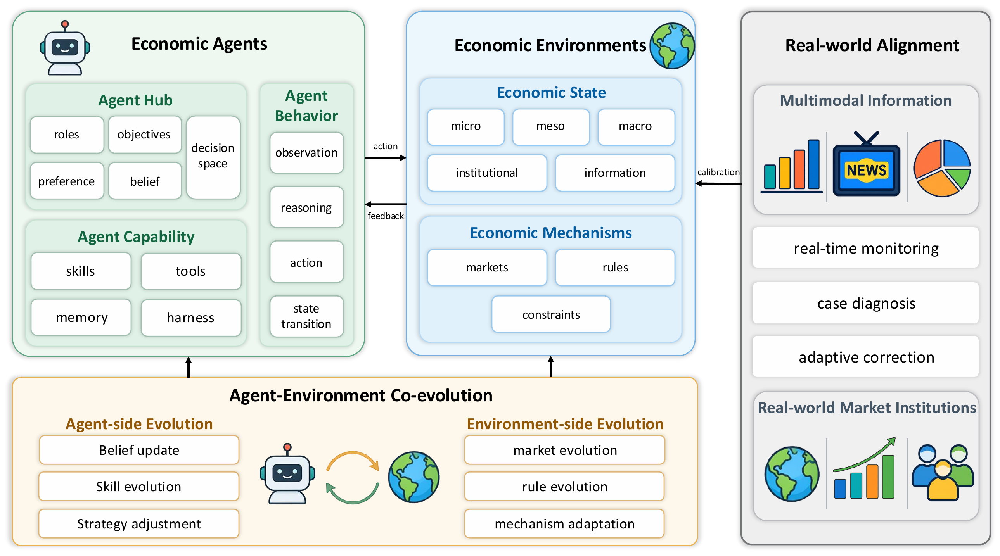

01研究背景与问题定义
用语言模型扮演家庭、企业或银行，可以生成像人的判断，却不会自动得到一个可执行的经济系统。价格、资产和交易如果只是模型口述，就可能违背预算、会计恒等式和结算规则；即使叙事合理，也无法可靠研究政策冲击怎样通过市场反馈影响下一轮行为。
本文提出 Economic World Model 的系统蓝图：经济状态不仅含可观测价格与库存，还含参与者的私有状态、主观信念以及制度规则。智能体提出行动，环境按机制执行和清算，聚合结果再改变信念与制度。核心转变是让经济结果由受约束的交互内生形成，并使整条转移链可记录、可校验、可与现实对齐。
| 必须保留的对象 | 缺失后果 | 对应责任 |
|---|---|---|
| 信念与激励 | 相同外部状态下的异质反应无法表达 | 智能体形成受信息权限约束的决策 |
| 预算、库存、会计与结算 | 交易可凭空创造资源或重复支出 | 环境验证可行性并执行机制 |
| 清算与聚合 | 价格成为预设旁白，无法研究互动后果 | 微观行为产生宏观状态 |
| 现实校准 | 内部一致的模拟仍可能系统偏离事实 | 记录误差、修正与版本 |
02方法与技术路线
这是架构与评估议程论文，提出可实现的状态分解和接口，而非发布一个已在现实经济预测上全面获胜的模型。其执行逻辑应按经济转移而非普通聊天流程理解。
信念与行动
各参与者读取许可信息，更新预期，提出带类型的经济行动。
约束与机制执行
检查预算、库存与权限；按市场、匹配、交易和结算规则处理联合行动。
内生聚合
微观资产、配置和交易汇总成新的价格、数量、风险与宏观状态。
制度演化
在需要演化的能力层，规则依据系统结果调整；规则变化自身也应留痕。
现实对齐
对照外部事实定位状态、行为或机制的偏差；修正必须记录，避免掩盖原始漂移。
混合状态让不同原因产生的同一结果可区分
价格下跌可能来自资金约束、悲观预期或交易制度变化。若状态只保存价格序列，就无法区分这些机制。论文用客观私有状态 z、主观信念 b、宏观状态 x 和制度 I 表达其不同作用：信念影响动作，动作在制度中改变资产，再形成整体状态。
这种分解并不保证信念可被真实测量。语言模型输出的信念是模拟器内部可检查的表示，现实参与者的心理状态仍需要证据约束。因此可解释状态与真实机制识别是两种不同目标。
环境必须掌握清算和状态提交权
智能体可以给出意图与理由，但应输出受类型和角色权限约束的行动。环境掌握状态、时间顺序、约束、撮合和结算，明确哪些请求能被执行，以及执行后资产和契约如何变化。
把硬约束交给运行层，使语言模型的灵活推理不必同时承担账本一致性。不同市场仍需具体机制：订单簿、拍卖、信贷分配或税制不能被一条抽象 world.step 替代。论文的接口是组件责任约定，完整应用仍须实现领域机制。
共同演化与现实对齐不能混成一个优化器
共同演化让更强代理暴露环境规则漏洞，也让更丰富环境提供更有价值的训练反馈。现实对齐则处理模拟与外部事实的偏差，必要时校准状态、规则或行为。前者可以提升模拟内部表现，后者要求外部证据。
如果每当出现偏差就直接纠正状态，轨迹可能看起来很接近现实，却依靠频繁强制干预。因而系统应同时记录误差与修正幅度；“被对齐后的拟合很好”不能代替模型独立产生正确经济动态的能力。
论文原始结构图 · 点击对照

03实验设计与结果分析
六级阶梯究竟衡量什么
| 层级 | 新增能力 | 仍未由层级名称保证 |
|---|---|---|
| L1 固定规则世界 | 受约束的基本经济交互 | 行为是否接近现实 |
| L2 自适应世界 | 参与者可以学习和调整 | 语言与情境判断 |
| L3 LLM 世界 | 语言信念和异质决策进入系统 | 持续改进和真实经济校准 |
| L4 自演化代理世界 | 代理自身持续改善 | 制度环境能否共同演化 |
| L5 演化经济世界 | 环境与机制也进入适应循环 | 对真实经济状态的锚定 |
| L6 经济数字孪生 | 实时经验对齐进入闭环 | 所有政策反事实均可识别 |
阶梯是设计需求与研究成熟度的组织方式，不是测量得分，也不是只要使用 LLM 就自然达到高层。尤其 L6 需要现实校准和可靠纠偏，不能由更多代理数量或更长模拟时间推导出来。
验证应沿哪几层展开
| 层次 | 关键观测 | 可以排除的假象 |
|---|---|---|
| 参与者 | 动作有效、角色一致、信念校准 | 仅有流畅角色扮演 |
| 执行环境 | 约束违例、清算误差、账本一致性 | 叙事合理但资源不守恒 |
| 共同演化 | 适应收益、稳定性与规则漂移 | 仅对固定测试目标投机 |
| 现实对齐 | 价格/数量/趋势误差及纠偏幅度 | 依赖不断人工修正的表面拟合 |
论文提供的是评价框架和实现责任划分，未用一套统一实验把六级能力逐级验证。因此这部分最有价值的是为系统建立可证伪的验证要求，不应被读成已经获得的实证结论。
04贡献、局限与综合评价
贡献是给经济智能体补上“世界”的执行责任
本文最耐用的思想是：经济世界不能只由会说话的参与者构成。信念、激励、硬约束、市场机制和宏观聚合必须处在同一个可执行闭环中。这个分工让不同模型可以替换，也让失真发生在哪一层更容易被追踪。
经济行为的真实性与规范性要分开
规则层可以禁止违规交易，确保动作满足预设预算和制度；这说明模拟按定义运行，不说明参与者的目标、风险偏好或信息理解像真实人。反过来，模仿到现实中的不理性行为也不意味着系统应允许违反硬约束。蓝图把两层分开是优点，但实施时必须明确哪些约束是研究世界的定义，哪些参数接受经验校准。否则一次人为规则调整可能同时改变拟合与政策反事实，难以追溯结果究竟来自行为证据还是设计者的制度假设。
内部一致性不等于经济因果有效性
会计恒等式和市场清算可以程序化验证，但多个行为机制仍可能产生相近的历史序列。用结果拟合来选择参与者规则，容易把不可识别的假设隐藏在语言推理中；在新政策或新制度下，它们可能给出截然不同的预测。
更强验证应预先冻结机制和校准规则，在未参与拟合的冲击期检验多变量响应，同时报告干预次数与幅度。若必须持续大幅纠偏，系统适合作为交互式情景工具；若在低纠偏下仍保持响应结构，才更支持世界模型的外部有效性。六级蓝图的意义在于明确这些证明负担，而非用层级标签替代证据。